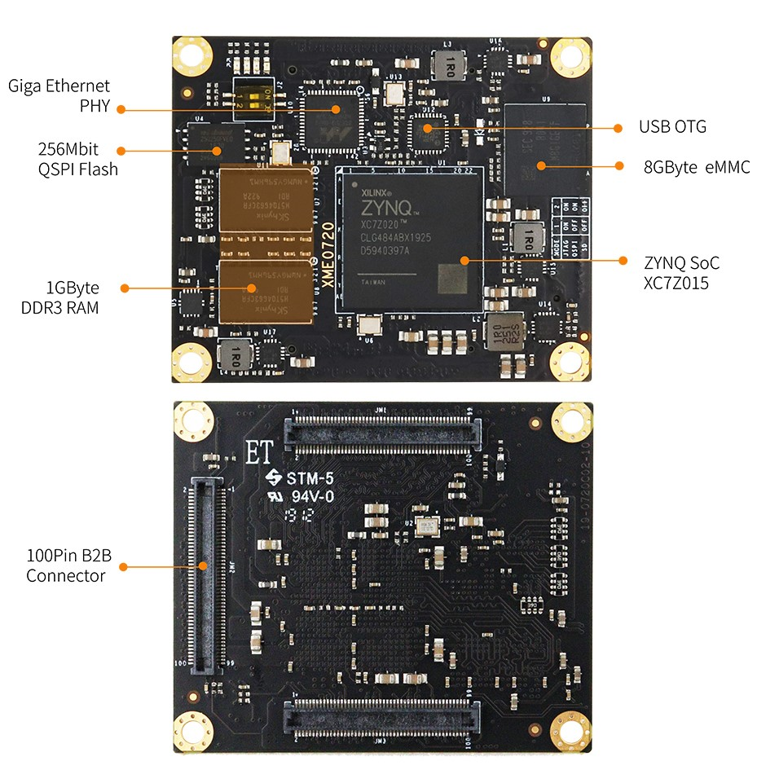
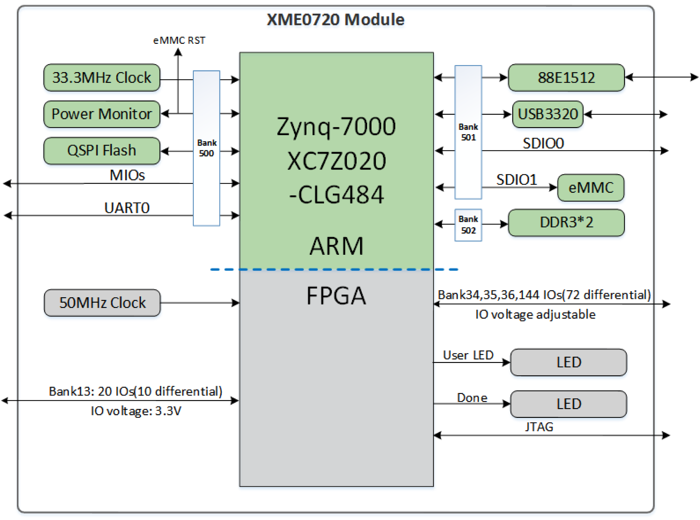
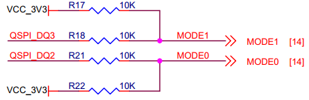

XME0720 Reference Manual
Development Environment:
Vivado 2018.3 is from Xilinx website
WeChat Public Number:

●1. Overview
XME0720 is a industrial-grade system module based on Xilinx Zynq-SoC from Microphase Technology.
It integrates 1GB DDR3 RAM, 32MB SPI flash, 8GB eMMC flash, Gigabit Ethernet PHY transceiver, USB PHY transceiver, and a large number of configurable I/Os expandable via high-speed connectors. With a size of only 5 x 6cm, the module is small and flexible enough to be used in a wide range of applications.
○Board Layout

○Key Features
Xilinx XC7Z020-2CLG484I
DDR3: 1GB DDR3 RAM
Flash: 256Mbit QSPI Flash, 8GB eMMC Flash.
LED: 1 Power LED, 1 FPGA Done LED;
2 user’s LED, 1 PS(Processing System ) control, 1 PL(Programmable Logic) control.PL GPIO: 164, 144 GPIOs are Adjustable Voltage,
Can be configured as 82 differential pairsGiga ETH: 10/100/1000M Adaptive.
USB Host: USB2.0 PHY(USB3320)
CLOCK: 1 33.33Mhz active crystal oscillator provides a stable clock for the PS system.
1 50Mhz active crystal oscillator provides additional clocks for the PL logic.
○Block diagram

○Mechanical Spec

●2. Function Resources
○FPGA
667 MHz dual-core Cortex-A9 processor
DDR3L memory controller with 8 DMA channels and 4
High Performance AXI3 Slave ports
High-bandwidth peripheral controllers: 1G Ethernet, USB 2.0, SDIO
Low-bandwidth peripheral controllers: SPI, UART, CAN, I2C
Programmable from JTAG, Quad-SPI flash, and microSD card
Programmable logic equivalent to Artix-7 FPGA
LUTs: 53,200
DSP Slices: 220
Logic Cells:85K
Flip-Flops: 106,400
Total Block RAM: 4.9MbAnalog Mixed Signal (AMS) / XADC: 2x 12 bit, MSPS ADCs with up to 17 Differential Inputs
Security: AES & SHA 256b Decryption & Authentication for Secure Programmable Logic Config
○DDR3
The module uses two 16-bit DDR3 memory chips to form a 32-bit bit-width, 1GB capacity.
| Signal Name | PIN Number | Signal Name | PIN Number |
|---|---|---|---|
| PS_DDR3_A0 | M4 | PS_DDR3_D9 | G1 |
| PS_DDR3_A1 | M5 | PS_DDR3_D10 | L1 |
| PS_DDR3_A2 | K4 | PS_DDR3_D11 | L2 |
| PS_DDR3_A3 | L4 | PS_DDR3_D12 | L3 |
| PS_DDR3_A4 | K6 | PS_DDR3_D13 | K1 |
| PS_DDR3_A5 | K5 | PS_DDR3_D14 | J1 |
| PS_DDR3_A6 | J7 | PS_DDR3_D15 | K3 |
| PS_DDR3_A7 | J6 | PS_DDR3_D16 | M1 |
| PS_DDR3_A8 | J5 | PS_DDR3_D17 | T3 |
| PS_DDR3_A9 | H5 | PS_DDR3_D18 | N3 |
| PS_DDR3_A10 | J3 | PS_DDR3_D19 | T1 |
| PS_DDR3_A11 | G5 | PS_DDR3_D20 | R3 |
| PS_DDR3_A12 | H4 | PS_DDR3_D21 | T2 |
| PS_DDR3_A13 | F4 | PS_DDR3_D22 | M2 |
| PS_DDR3_A14 | G4 | PS_DDR3_D23 | R1 |
| PS_DDR3_BA0 | L7 | PS_DDR3_D24 | AA3 |
| PS_DDR3_BA1 | L6 | PS_DDR3_D25 | U1 |
| PS_DDR3_BA2 | M6 | PS_DDR3_D26 | AA1 |
| PS_DDR3_NCAS | P3 | PS_DDR3_D27 | U2 |
| PS_DDR3_CKE | V3 | PS_DDR3_D28 | W1 |
| PS_DDR3_CLK_N | N5 | PS_DDR3_D29 | Y3 |
| PS_DDR3_CLK_P | N4 | PS_DDR3_D30 | W3 |
| PS_DDR3_NCS | P6 | PS_DDR3_D31 | Y1 |
| PS_DDR3_DM0 | B1 | PS_DDR3_DQS_N0 | D2 |
| PS_DDR3_DM1 | H3 | PS_DDR3_DQS_N1 | J2 |
| PS_DDR3_DM2 | P1 | PS_DDR3_DQS_N2 | P2 |
| PS_DDR3_DM3 | AA2 | PS_DDR3_DQS_N3 | W2 |
| PS_DDR3_D0 | D1 | PS_DDR3_DQS_P0 | C2 |
| PS_DDR3_D1 | C3 | PS_DDR3_DQS_P1 | H2 |
| PS_DDR3_D2 | B2 | PS_DDR3_DQS_P2 | N2 |
| PS_DDR3_D3 | D3 | PS_DDR3_DQS_P3 | V2 |
| PS_DDR3_D4 | E3 | PS_DDR3_NRST | F3 |
| PS_DDR3_D5 | E1 | PS_DDR3_ODT | P5 |
| PS_DDR3_D6 | F2 | PS_DDR3_NRAS | R5 |
| PS_DDR3_D7 | F1 | PS_DDR3_NWE | R4 |
| PS_DDR3_D8 | G2 |
○Giga ETH
The 88E1512 chip supports 10/100/1000M network transfer rates and communicates with the MAC layer of the Zynq7000 PS system via the RGMII interface. It features MDI/MDX crossover, auto-negotiation for multiple speeds, and master/slave configuration. Additionally, it supports the MDIO bus for PHY register management and provides advanced energy efficiency with IEEE 802.3az Energy-Efficient Ethernet (EEE). The 88E1512 is optimized for low power consumption and offers robust performance for high-speed network applications.
○USB Host
The USB2.0 transceiver on-board is the USB3320C-EZK, which supports the ULPI standard interface. It’s connected with ZYNQ’s bus interface to enable high-speed USB2.0 Host mode data communications.
○eMMC
The module includes an 8GB eMMC interface (PS_SDIO1) for system files or data storage. It can also serve as a secondary boot device alongside the QSPI flash. The interface is PS BANK501 MIO[46-51].
| Signal Name | Pin Name | Pin Number |
|---|---|---|
| PS_MIO48_501 | MMC_CLK | D11 |
| PS_MIO47_501 | MMC_CMD | B10 |
| PS_MIO46_501 | MMC_DATA0 | D12 |
| PS_MIO49_501 | MMC_DATA1 | C14 |
| PS_MIO50_501 | MMC_DATA2 | D13 |
| PS_MIO51_501 | MMC_DATA3 | C10 |
○JTAG
The JTAG signal link of the XME0720 is connected to the expansion connector.
| Signal | JM3 Pin Number | Explain |
|---|---|---|
| VCC_3V3 | 13 | Module voltage output, JTAG reference voltage |
| FPGA_TDI | 21 | Input (3.3V) |
| FPGA_TDO | 17 | Output (3.3V) |
| FPGA_TCK | 15 | Input (3.3V) |
| FPGA_TMS | 23 | Input (3.3V) |
| GND | 19 | Connect to the GND signal on the module |
○Boot Config
Configure the ZYNQ startup mode using core module pins PIN119 (MODE0) and PIN120 (MODE1). The ZYNQ configuration schematic is shown below.

○Quad-SPI Flash
On-board 256M Quad-SPI Flash memory W25Q256FVEI is used to store initial FPGA configuration and user’s application as well as data.
| Position | Model | Capacity | Factory |
|---|---|---|---|
| U4 | W25Q256FVEI | 256 Byte | Winbond |
○Clock
The XME0720 core board provides a 33.3Mhz active clock for the PS system and a 50Mhz active clock for the PL system.
| Position | Signal Name | Frequency | Pin Number/Pin Name |
|---|---|---|---|
| U2 | PS_CLK_33d3 | 33.333Mhz | PS_CLK_500 |
| U6 | PL_CLK_50M | 50Mhz | Y9 |
○Power
The XME0720 supports a wide range of power input (5V~15V), with a recommended design power input of +12V.
The module powers up in a cascading sequence: 1.0V- > 1.8V -> 1.5V- > 3.3V. The 3.3V output will be powered up last, and at the same time, it will provide the PG signal of system power status.
○LED
The XME0720 board includes four LEDs: a power indicator, an FPGA configuration status light, a PL-controlled user LED, and a PS-controlled user LED.
The LED signals are described in the following table.
| LED | FPGA Pin/ FPGA Name |
Note |
|---|---|---|
| D4 | -- | Power LED |
| D1 | T12/DONE_0 | FPGA configuration status LED, lit after successful FPGA configuration |
| D2 | G6/PS_MIO0_500 | LED on when FPGA PS_MIO0_500 output is low |
| D3 | T16 | LED on when FPGA T16 output is low |
○Expansion Ports
The XME0720 uses three sets of connectors, JM1, JM2 and JM3, for the FPGA IO signals and Ethernet interface.
3 x QT50A01-29200-7H, 100Pin, 0.5mm Pitch
| Core Board Connector Models | Based Board Connector Models | Manufacturers |
|---|---|---|
| QT50A01-29200-7H | QT51A01-38200-7H | FOXCONN |
Description:
Bank34 IO level depends on JM1 Pin11,13 voltage input, input range 1.2V-3.3V.
Bank35 IO level depends on JM2 Pin91,93 voltage input, input range 1.2V-3.3V.
SD Signal (JM3 Pin73,75,77-Pin85) voltage is 1.8V.
MIO9-MIO13, UART, JTAG, RESET level is 3.3V.
Please refer to the ‘XME0720_Pinout_Table_R10’ for detailed pin definitions of the XME0720 and its carrier board.
The XME0720 is only compatible with the older versions (black connector version) of the PE100 and PE300. When purchasing a matching carrier board, please consult the sales staff to confirm the availability of this version in stock.